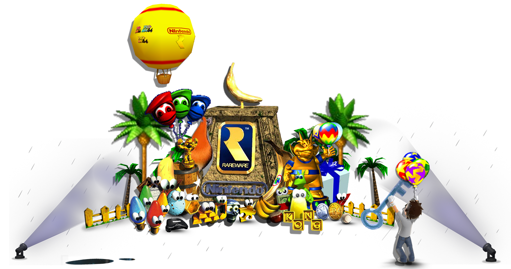

Projects
This is my "projects" page, as well as a general what I've been up to page.
March
- Celebrated Conker's Bad Fur Day 25th Anniversary
- Made this projects page
Overall
- Researching website archiving - stay tuned...
- Becoming more organized
August
- Xbox 360 Homebrew Implementation of Ninja Gaiden (2004) Hurricane Packs
March
- Learned about the iQue Player and homebrew
- Celebrated Chrono Trigger's 35th Anniversary
- Made an account here the day after ^
November
- Learned about NES Animal Crossing memory card tools
August
- Began archiving game renders
July
- Celebrated the closure of the Xbox 360 Marketplace
- Sideloading Infinity Blade
June
- Began uploading "Manhunt: The Search for Sickamore"
May
- Satellaview Archiving
- Majora's Mask PC port release
March
- Got into Xbox 360 Homebrew
February
- Got into RE2 speedruns
January
- Got into F-Zero AX speedruns
July
- Released "Legalize Melee" modpack
- Archived Dairantou Smash Bros DX Gold Disc
- Improved video editing skills
May
- First original upload to the Internet Archive - Ninja Gaiden 2004 Japanese Demo Disc
March
- Got into OG Xbox Homebrew
February
- Learned how to make custom N64 boxart
- Made "The Legend of Zelda: The Ocarina of Time with Triforce% Quest" custom box art
November
- Got into SSBM modding
July
- Started playing the HD Remaster of SMT Nocturne
- Wrote a detailed steam guide on fusing Metatron so people don't have to go to old Gamefaqs posts
January
- Got into Castlevania HD speedruns
April
- Got into Touhou Luna Nights speedruns/wrote a guide
January
- Made a tutorial on jailbreaking your Wii
September
- Got into Super Smash Bros. Brawl modding
